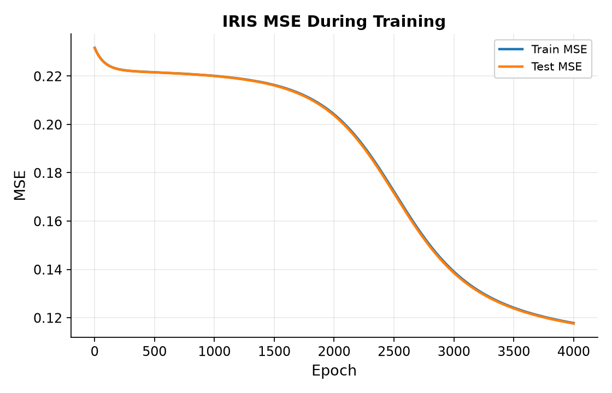
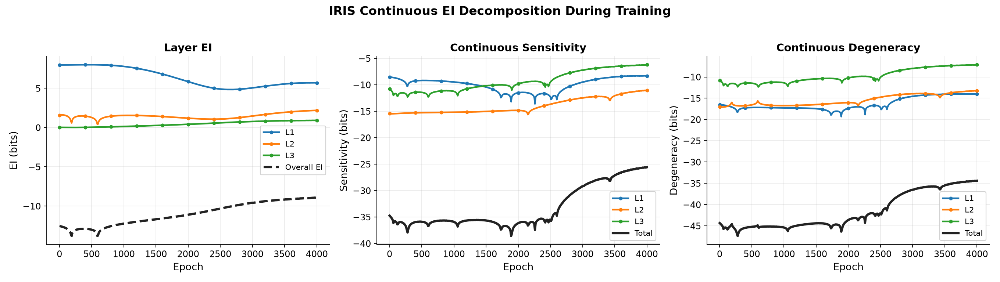
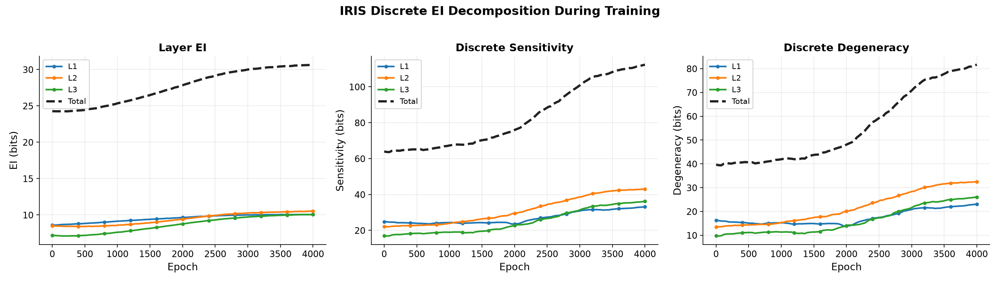
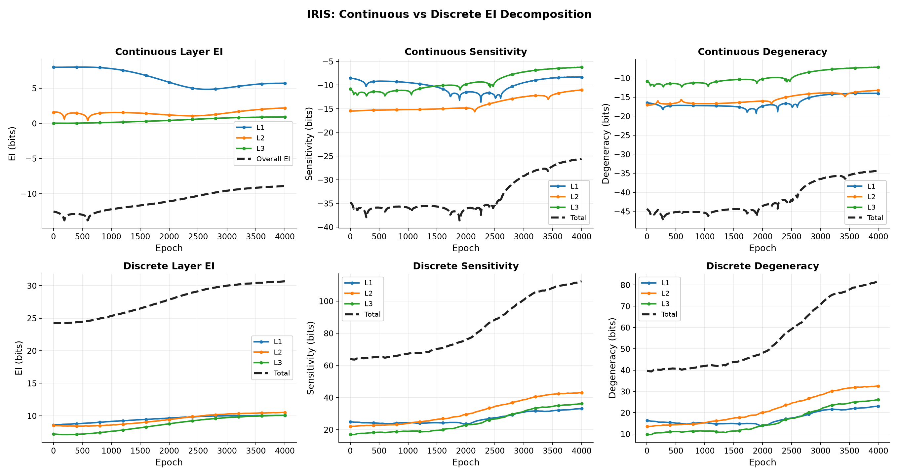
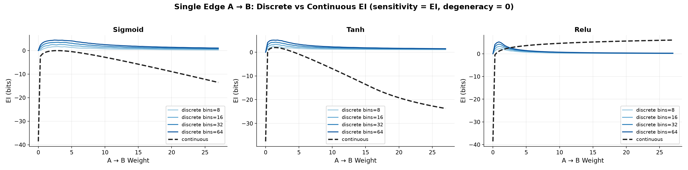
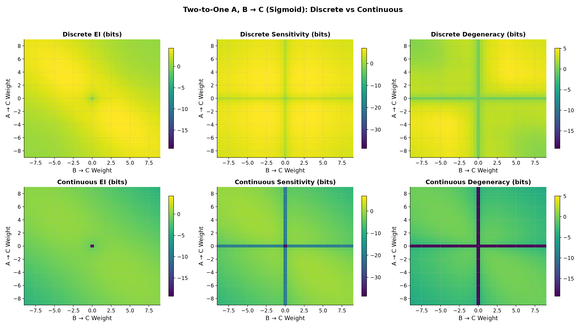
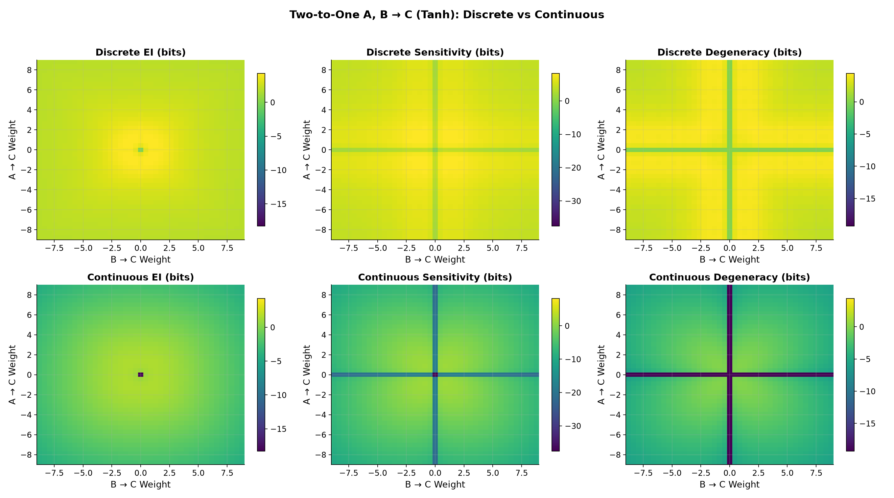
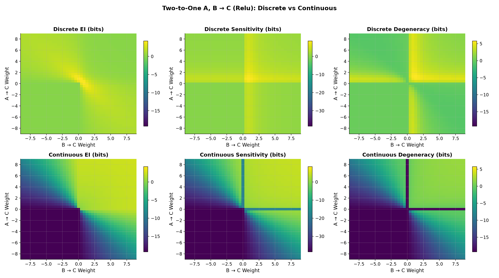
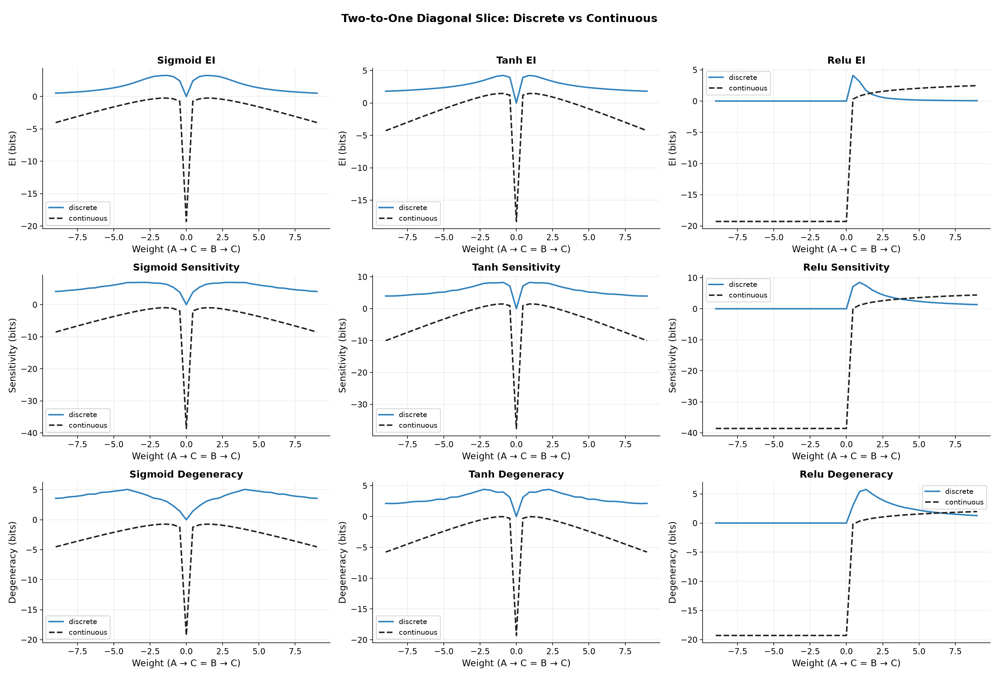

连续版 EI 实验图片说明
本文档汇总 2026-10-22 会话中生成的全部实验图片，给出 Sensitivity / Degeneracy 在离散与连续两种口径下的完整推导与对照，并解释每张图的计算设置与趋势含义。涉及的代码已重构为 eicore/（核心库）+ experiments/（实验入口）结构，测试位于 tests/。
| 图片 | 实验 | 内容 |
|---|---|---|
latest/iris_continuous_ei/loss_curve.png | IRIS 训练（连续版） | 4000 epoch 训练/测试 MSE |
latest/iris_continuous_ei/ei_decomposition.png | IRIS 训练（连续版） | 各层 EI / Sensitivity / Degeneracy 随训练的曲线 |
latest/iris_discrete_ei/ei_decomposition.png | IRIS 训练（离散版，轻量口径） | 各层离散 EI / Sensitivity / Degeneracy 随训练的曲线 |
latest/iris_continuous_vs_discrete.png | IRIS 训练（两口径对比） | 连续 vs 离散 2×3 分解对比 |
latest/figure1_ei_decomposition/single_edge_ei.png | 论文 Figure 1 单边 | A→B 权重扫描：离散 vs 连续 EI |
latest/figure1_ei_decomposition/two_to_one_{sigmoid,tanh,relu}.png | 论文 Figure 1 双入单出 | A,B→C 权重网格上 EI / Sensitivity / Degeneracy 热图 |
latest/figure1_ei_decomposition/two_to_one_diagonal.png | 论文 Figure 1 双入单出 | 对角线切片：离散 vs 连续三项指标对比 |
图片统一引用 results/latest/…：实验脚本结束时会自动把最新一次运行的 png/csv 镜像到该目录，重跑实验后无需修改本文件的路径。手动补刷：python -m tools.publish_latest。
1. Sensitivity / Degeneracy 公式推导：离散 vs 连续
1.1 共同起点：EI 的两种计算路线
论文对层间 EI 的定义是最大熵干预下的互信息：
即对上游层做独立均匀（最大熵）注入，度量上游状态与下游状态之间的互信息。"离散版"与"连续版"的区别只在如何计算这个互信息：
- 离散版（论文原方法）：把注入值和输出值都均匀分箱，用联合直方图估计经验分布，直接算离散互信息；
- 连续版（本项目的解析近似）：给输出加一个高斯噪声模型 $Y = f(X) + \varepsilon$，条件熵 $H(Y|X)=H(\varepsilon)$ 有解析式，输出熵 $H(Y)$ 用变量替换公式经 Jacobian 的局部体积近似得到。
1.2 离散版推导
第一步：分箱互信息
设上游层 $n$ 个神经元各自均匀注入并离散为 $b$ 个 bin，则 cause 状态数 $N_c = b^n$。输入编码为联合状态 $C$，输出编码为联合状态 $E$：
第二步：传统分解 EI = determinism − degeneracy
在 Boolean network / Markov chain 传统里，用最大 cause 熵 $\log_2 N_c$ 归一化：
含义：determinism 度量"给定 cause 后 effect 有多确定"，degeneracy 度量"多少不同的 cause 压到同一个 effect"（输出熵的损失）。
第三步：DNN 中用 sensitivity 替代 determinism
前馈网络是确定性映射：给定连续输入，输出唯一确定，$H(E|C)\approx 0$（仅来自 bin 内样本跨界的微小噪声），于是 det ≈ 1 恒成立、没有区分度。论文因此改用 sensitivity：
即每次只扰动一个输入神经元（其余固定为 0），记录每个输出神经元，逐对算 MI 再求和。然后：
直觉：单边扰动时每条路径独占输出；联合注入时多条路径同时变化、在输出上互相干扰（输出分不清变化是谁引起的），所以联合 MI 通常小于单边 MI 之和，$\mathrm{Deg}_{disc} \ge 0$。两条路径效果重叠越多，degeneracy 越大。当映射"逐边独立"（如单位阵，$Y_j$ 只依赖 $X_j$）时等号成立、deg ≈ 0（我们的单元测试锁定了这一点；分箱噪声可带来约 −0.1 bits 的小负偏差）。
双入单出显式：
注意它与交互信息（co-information）$I(A;C)+I(B;C)-I((A,B);C)$ 形式相同，但 sensitivity 的单边 MI 是在 $do(B{=}0)$、$do(A{=}0)$ 的不同干预分布下算的，不是同一分布下的条件 MI，因此不服从 co-information 可负的结论，在该口径下通常非负。
1.3 连续版推导
第一步：噪声模型与条件熵项
设 $X\in\mathbb{R}^n \to Y\in\mathbb{R}^m$，无偏置 $Y = a(WX) + \varepsilon$，$\varepsilon\sim\mathcal N(0,\mathrm{diag}(\sigma_1^2,\dots,\sigma_m^2))$，注入 $X\sim U(\Omega)$，$\Omega=\prod_i[l_i,u_i]$，$H(X)=\sum_i \log w_i$（$w_i=u_i-l_i$ 为区间宽度）。则：
这就是 term1（确定性项）：$-\,H(Y|X)$。训练实验中 $\sigma_{l,j}$ 取每层每个输出神经元反传梯度的 std（训练越好、误差信号越小、term1 越大 = 任务确定性越强）；Overall EI 用输出残差 std。
第二步：输出熵的 Jacobian 局部体积近似
若 $f$ 可逆（$m=n$），变量替换公式给出 $H(Y) = H(X) + \mathbb E_x[\log|\det J|]$；矩形情形用伪行列式（奇异值之积）作局部体积元近似：
合得 full EI（并除以 $n$ 归一化）：
第三步：逐边 EI 与 sensitivity
与离散版 $\sum_{i,j} I(T_i;T_j)$ 对应，每条边 $i\to j$ 看成 $1\to1$ 系统 $Y_j = a(W_{ji}X_i) + \varepsilon_j$：
严格逐边求和（约定 A，与离散版 $\sum_{i,j} I(T_i;T_j)$ 完全对齐）时每条边都携带自己的 $-H(\varepsilon_j)$ 和 $H(X_i)$：
当前代码实现采用约定 B：term1 与 $H(X)$ 只计一份再整体除 $n$：
第四步：degeneracy = Sens − EI
约定 A（term1 不抵消）：
约定 B（term1 恰好抵消，只剩 Jacobian 重叠项）：
对 Jacobian 重叠项的符号：Hadamard 不等式给出 $\log\mathrm{pdet}\,J \le \sum_i \log\|J_{:,i}\|$（联合体积不超过各列独立拉伸之积），但 $\sum_{i,j}\log|J_{ji}|$ 含 $n\cdot m$ 项、pdet 只含 $\min(m,n)$ 个奇异值，权重较小时前者远更负，所以 约定 B 下 deg 恒为负（实验与测试均已锁定）。
1.4 两种口径逐项对照
| 成分 | 离散版（论文） | 连续版（本项目） |
|---|---|---|
| cause / 注入 | 分箱后的联合状态 $C$，$N_c = b^n$ 个状态 | 连续均匀注入 $X\sim U(\Omega)$，$H(X)=\sum_i\log w_i$ |
| effect / 输出 | 分箱后的联合状态 $E$（超出区间 clip） | $Y = a(WX) + \varepsilon$，高斯噪声模型 |
| 确定性项 | $-H(E|C)$（确定性映射下 ≈ 0） | $-H(\varepsilon) = -\frac12\sum_j\log(2\pi e\sigma_j^2)$，σ 来自反传梯度/残差 std |
| 非简并 / 体积项 | $H(E)$（输出占用多少 bin） | $\mathbb E\log\mathrm{pdet}\,J$（局部线性体积） |
| Sensitivity | $\sum_{i,j} I(T_i;T_j)$，单边扰动、其余固定 0 | $\sum_{i,j}$ edgewise EI（约定 A/B 差别在 term1 份数） |
| Degeneracy | Sens − EI，通常 ≥ 0，含确定性冗余 | 约定 B：仅 Jacobian 重叠项，恒 ≤ 0；约定 A：含 $\frac{n-1}{n}\cdot(-\frac12\sum_j\log 2\pi e\sigma_j^2) \ge 0$ |
| 归一化 | 论文不归一化（$\log_2 N_c$ 仅用于传统分解） | 统一除以 $n$（per-input-dim） |
| 自由参数 | bins 数 $b$（决定曲线幅度，形状不变） | 噪声尺度 $\sigma$（决定 term1 水平） |
| 饱和机制 | 输出堆到端部 bin → $H(E)$ 下降 | $a'\to 0$ → $\mathbb E\log a' \to -\infty$ |
| 可比性 | 趋势（形状、峰位置、训练中的相对变化）可比；绝对值与 degeneracy 符号不可直接比 | |
1.5 单边 1→1 闭式对比
单边情形两种口径都有 $\mathrm{Sens} = \mathrm{EI}$、$\mathrm{Deg}=0$（平凡）。连续版可写出闭式：
- ReLU：$a'=1$，$\mathrm{EI} = \text{term1} + \log w$，单调递增；离散版在 $w\approx 1$–$2$ 达峰后因 clip 衰减到 0（输出按 $[0,1]$ 分箱，超出部分堆到最后一个 bin）。
- Sigmoid：$z$ 大时 $a'(z)\approx e^{-z}$，$\mathrm{EI} \approx \text{term1} + \log w - w/2$，$w^*\approx 2$ 处达峰后线性衰减；
- Tanh：$a'$ 衰减更快（$\approx 4e^{-2z}$），$\mathrm{EI} \approx \text{term1} + \log w - w$，峰值更低。
即连续版同样复现论文的"先增后减"，只是衰减机制是激活饱和使 $\mathbb E\log a'$ 线性变负，而离散版是分箱饱和。
1.6 双入单出 2→1 显式对比
连续版 $J=[j_a,\ j_b]$，$j_\bullet = w_\bullet\, a'(z)$，$\mathrm{pdet} = \sqrt{j_a^2+j_b^2}$：
一条边为 0 时取 $\log 0$（代码用 EPS 截断为大负值）；两边均衡时取 $\log(1/\sqrt{2})$。约定 A 下则额外含正的确定性冗余项，$\sigma$ 小时整体为正。离散版对应量 $\mathrm{Deg}_{disc} = I(A;C)|_{do(B=0)} + I(B;C)|_{do(A=0)} - I((A,B);C) \ge 0$，在两个权重都强的象限最大（路径重叠最强），单边为 0 时退化为 0——两种口径的空间结构一致，符号相反，这正是图 9 对角线切片中看到的现象。
2. 实验一：IRIS 训练过程中的连续版 EI 分解
设置（与论文一致）：架构 4→5→5→3，sigmoid，no bias，MSE，SGD lr=0.01，batch=10，4000 epochs，权重初始化 $U([-1/\sqrt{fanin}, 1/\sqrt{fanin}])$；每 10 epoch 测量一次，每次 2000 注入样本。
2.1 连续版结果


关键数值（epoch 1 → 4000）：
| 指标 | L1 | L2 | L3 | Total / Overall |
|---|---|---|---|---|
| EI (bits) | 7.99 → 5.70 | 1.57 → 2.19 | 0.02 → 0.92 | Overall: −12.55 → −8.92 |
| Sensitivity (bits) | −8.53 → −8.35 | −15.43 → −11.05 | −10.80 → −6.20 | −34.77 → −25.59 |
| Degeneracy (bits) | −16.52 → −14.04 | −17.00 → −13.24 | −10.83 → −7.12 | −44.35 → −34.40 |
三点发现：
- Sensitivity 上升的主因是权重增长（transmission 项）而非 σ 下降。以 L3 为例：transmission −62.8 → −42.1 bits（+20.7），sens_term1 仅 8.8 → 11.1（+2.3）。训练使 $|W|$ 增大，$\log|a'W|$ 随之增大。
- "σ 随训练变小"只在输出层成立。各层反传梯度 std：L1 0.00043 → 0.0022（变大）、L2 0.0033 → 0.0044（变大）、L3 0.0318 → 0.0228（变小）。浅层梯度 std 被下游权重幅度放大，因此 L1/L2 的 sens_term1 反而下降；只有 Overall EI（用输出残差 σ：0.477 → 0.342）符合"训练越好确定性越强"的直觉，单调上升。
- Degeneracy 全程为大负值是口径产物（见第 1.4 节）：逐边求和含 $n\times m$ 个 $\log|J_{ji}|$ 而联合体积只有 $\min(m,n)$ 个奇异值，两者都除 $n$ 后量级天然不对称。曲线在 ~250、~1900、~2300、~3400 epoch 的下凹与各层 EI 的下凹位置一致，对应 loss 下降过程中的权重重整。
2.2 离散版 IRIS 对照（轻量口径）
同一次训练轨迹（同 seed，MSE 曲线与连续版完全一致），用论文分箱互信息方法测量：bins=32，每 40 epoch 一个测量点，每点 $3\times10^4$ 注入样本（论文原口径为 $10^7$，此处为速度取轻量）。下图为论文风格的原始 bits（未除 $n$ 归一化）：

关键数值（epoch 1 → 4000，原始 bits）：
| 指标 | L1 | L2 | L3 | Total |
|---|---|---|---|---|
| EI | 8.59 → 10.06 | 8.50 → 10.52 | 7.18 → 10.08 | 24.27 → 30.66 |
| Sensitivity | 24.89 → 33.13 | 22.08 → 43.03 | 16.99 → 36.16 | 63.96 → 112.32 |
| Degeneracy | 16.30 → 23.07 | 13.58 → 32.51 | 9.81 → 26.08 | 39.69 → 81.66 |
- 各层 $H(E|C) \approx 0.007$ bits $\ll \log_2 N_c$，确认前馈网络近似确定性映射——这正是论文用 sensitivity 替代 determinism 的原因（第 1.2 节）。
- Sensitivity 全程上升（总 +75%），Degeneracy 在约 2500 epoch 后加速上升（总 +106%，翻倍以上），EI 只小幅增长（+26%）——与论文 Figure 2/4 的观察一致："runs first demonstrate an increase in sensitivity, and then later an increase in degeneracy"，degeneracy 的后期增长抵消了大部分 sensitivity 对 EI 的贡献。
- 层间结构：L2（中间隐藏层）的 sensitivity 与 degeneracy 增长最猛（22.1→43.0、13.6→32.5），是路径重叠增加最多的层。
2.3 两种口径总对比

- EI：两种口径都显示训练增强了网络的 causal structure——离散 Total EI 24.3→30.7 bits 单调上升，连续 Overall EI −12.6→−8.9 bits 也单调上升（由残差 σ 0.477→0.342 驱动）。
- Sensitivity：两口径同步上升。离散版直接度量单边扰动的传输（权重增大 → 单边 MI 增大）；连续版上升的主因同样是权重增长（transmission 项，见第 2.1 节分解）。
- Degeneracy：离散版恒正且后期加速（路径重叠增多），连续版（约定 B）恒负但同步上升（重叠项的量级变化同向）。符号差异来自第 1.3/1.6 节的约定差别，两口径的 degeneracy 趋势方向一致，都指示"训练中路径重叠增多"。
- 离散版保留了论文的单位与归一化习惯，可与论文 Figure 2/4 的数值直接对照；连续版的优势是无需分箱、可微分、可精确到逐边/逐神经元（$\sigma_{l,j}$），代价是依赖高斯噪声与局部体积两处近似。
3. 实验二：论文 Figure 1 简单系统，离散 vs 连续
设置：单边 A→B：$w\in[0,27]$（91 点），3 万注入样本，离散 bins ∈ {8,16,32,64}；双入单出 A,B→C：$w_{ac},w_{bc}\in[-9,9]$（41×41 网格），10 万注入样本，bins=32。连续版 σ=0.1 固定。采样范围按论文：sigmoid/ReLU $x\in[0,1]$，tanh $x\in[-1,1]$；输出离散化区间 sigmoid/ReLU $[0,1]$（ReLU 超出部分 clip）、tanh $[-1,1]$。
3.1 单边 A→B（对应论文 Figure 1a–c）

- Sigmoid / Tanh：两种口径都"先增后减"，但机制不同——离散版是输出分箱饱和（大 $w$ 时输出堆到两端 bin），连续版是饱和激活使 $\mathbb E\log a'$ 线性变负（第 1.5 节闭式）。
- ReLU：连续版 $\mathrm{EI} = \text{term1} + \log w$ 单调增长；离散版在 $w\approx 1$–$2$ 达峰后因 clip 衰减到 0——完整复现论文 Figure 1c 中实线与虚线的分歧。
3.2 双入单出 A,B→C（对应论文 Figure 1d–f）

- 离散 EI 呈论文 Figure 1d 的"大致二重对称"山丘形，原点处凹陷（双权重近 0 时输出近似常数）。
- Sensitivity 沿坐标轴呈十字形下陷：单边驱动时 sensitivity 退化为单边 MI，小于两边都强时的逐边 MI 之和。
- 离散 Degeneracy 在两个权重都强的象限最亮——正是"两条路径效果重叠"的区域，与论文 causal plane 中 degeneracy 的含义吻合。
- 连续版整体结构相似但为负值，零轴处有深谷：某条边权重为 0 时 $\log|J|=\log 0$，代码用 EPS 截断为有限大负值。



4. 备注
- 离散版 IRIS 训练对照：论文口径为每个测量点 $10^7$ 注入样本 × 每 10 epoch 一个测量点 × 3 层（full EI + 逐边 sensitivity），计算量过大；本文档使用轻量口径（每 40 epoch 一个测量点、每点 $3\times10^4$ 样本）补充离散版 IRIS 曲线，脚本为
experiments/iris_discrete_ei.py。 - 单边与双入单出的解析性质已被单元测试锁定（
tests/test_figure1_ei_decomposition.py）：单边 sens=EI、deg=0；单边权重为 0 时 EI=0；双入单出某权重为 0 时离散 deg ≈ 0；连续 2→1 deg ≤ 0（AM–GM 不等式）。 - 复现命令（项目根目录）：
python -m experiments.iris_continuous_ei --outdir results python -m experiments.iris_discrete_ei --record-every 40 --ei-samples 30000 --outdir results python -m experiments.figure1_ei_decomposition python -m unittest discover -s tests -t .